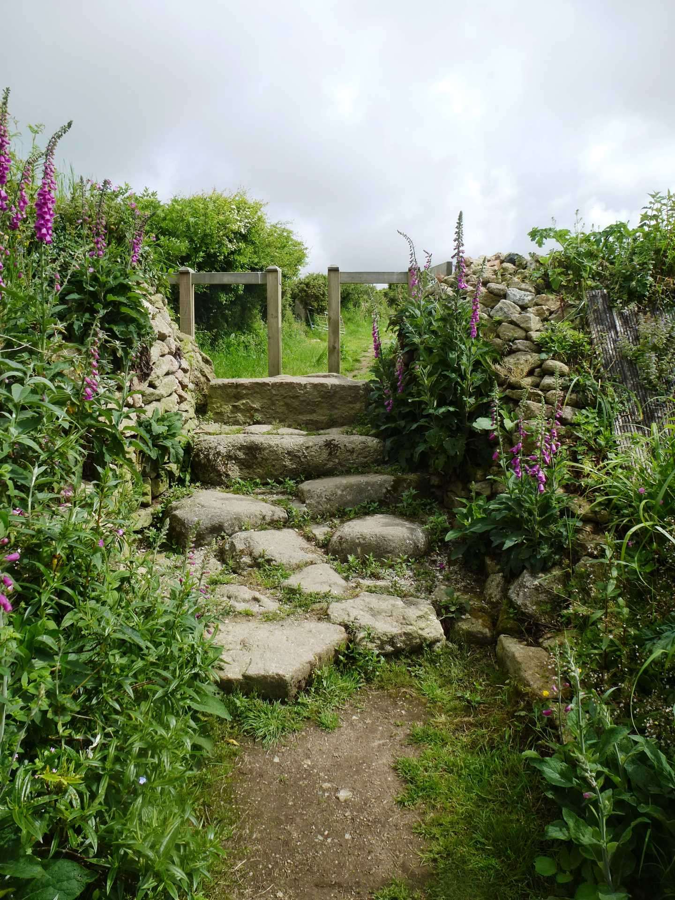
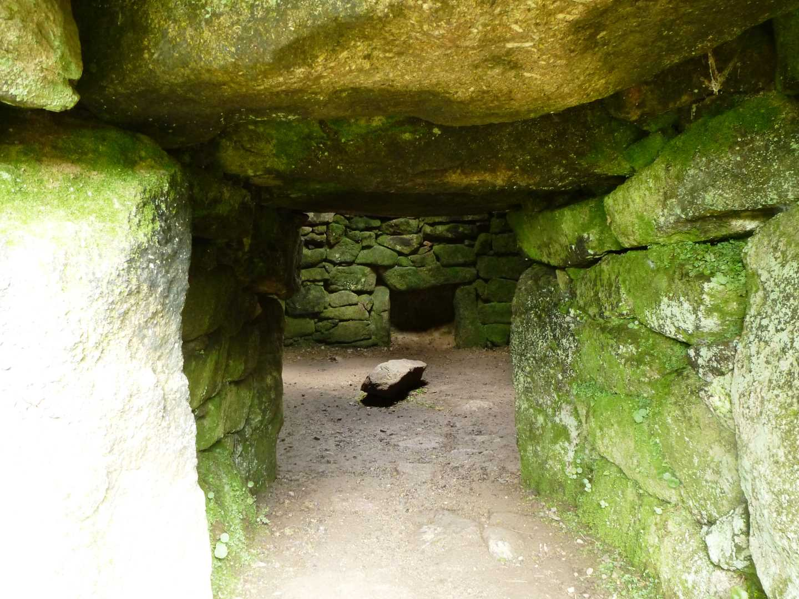

Start Ref: 403 284
End Ref: 403 284
Distance: 1 miles
Time: 0.5 - 1hrs
Our walk starts in the small car park at Brane, and just to warn you, it feels like we have taken the wrong road and that we are driving down a narrowing road to nowhere, just after we have turned off the A30.
From the car park we have two options on our circular walk, but for today I am going to suggest that we head North up the narrow footpath keeping the houses on our right. The path has little granite markers with arrows leading us in the correct direction, as it passes out of the narrow footpath and widens up as we step up over a granite and wooden stile.
Following the next field up and then left, as indicated by the arrows, we pass into the next field and here are greeted by the beautiful Carn Euny on our right. To enter the settlement, we need to go through a small gate.
For those of us interested in history and our ancient pre-Cornish/British culture, this village (old name of Hendra Chapeluni) is a wonder to behold. When studying for my history exams one of my field visits was to Chysauster where I had to map the houses, their pathways and the Fogou, but I have to say that I find this settlement far more pleasing to the eye. The buildings are interlinked and many have an internal walled room to one side. They are tightly packed together and the Fogou (rather than being situated at a distance) is just off centre of the settlement and has a beautiful vaulted ceiling.
I spent more time looking around the settlement, than I did walking!
Once we have managed to tear ourselves away, we leave by the gate at the North Western edge (behind the Fogou if you were looking at the Fogou from the entrance we came in through). We follow the path down and pass the old well, as we drop down and join the bridleway as it takes us West and joins another path by a lovely building with an external round chimney breast.
Note.. If we were to turn right here, we would find after a very short distance, a footpath off to our left signposted as the Carn Euny Way, which would link us in to Walk 13.
However, we are actually going to head left and down the wide bridleway as we now take an easy stroll down to the left then the right before the path straightens out and we suddenly find ourselves back at our car.
This walk is a short and enjoyable walk, with good views (on a clear day) which is ideal for those with family members who would rather have a shorter less strenuous walk, but also giving us plenty with which to immerse ourselves with (whilst treating the site with the respect that it deserves).
I hope you enjoy the walk, and the history as much as I do.